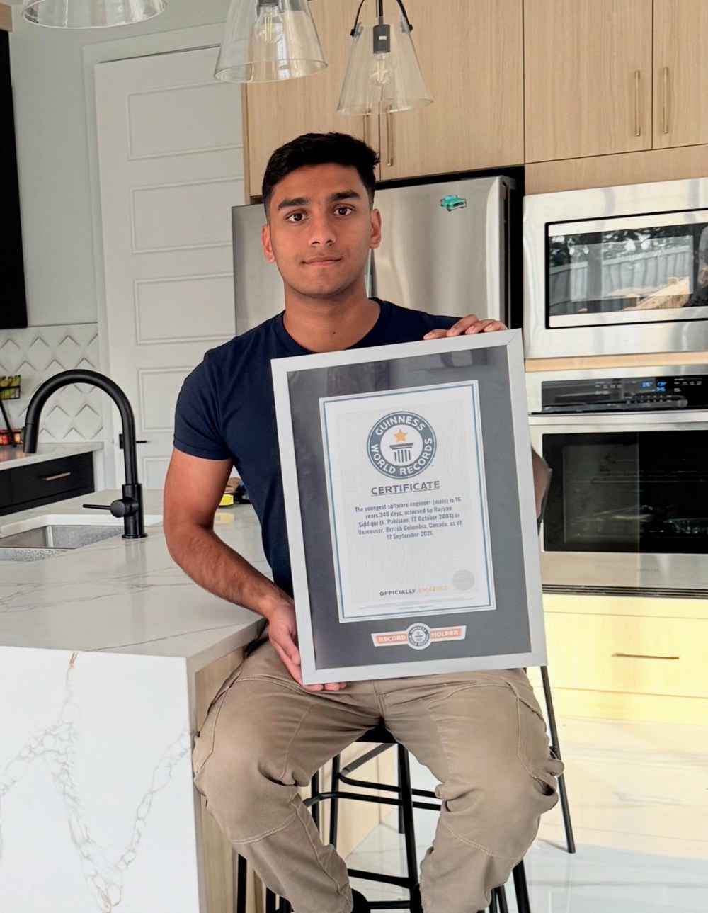

Understand the basics
What AI can do, where it makes mistakes, and how to choose a useful tool for a task.
LIVE AI MASTERCLASS · SCHOOL TO UNIVERSITY
Understand AI.
Find your direction.
Join Rayyan Siddiqui for a three-hour online masterclass for students in Pakistan. Learn how to navigate AI tools, explore future career paths and leave with a practical guide to keep learning.
Sunday, October 18, 2026 · 7–10 p.m. PKT
Join the waitlistFree to join the waitlist · Full masterclass fee: US$20 / PKR 5,000

Joined Microsoft
at age 16
Guinness World Records title
Youngest software engineer (male)
One live masterclass
3 hours + a practical guide
THE LEARNING PATH
A clear starting point for understanding AI, trying it in practice and exploring where it could take you.
What AI can do, where it makes mistakes, and how to choose a useful tool for a task.
Give clear instructions, add context, refine an answer and turn a vague question into a useful prompt.
Discover how AI connects with software, design, business and research, and which foundations you can start building now.
Take away prompt examples, a tool-selection checklist and a learning roadmap. Practise checking answers and protecting your information.
MEET YOUR INSTRUCTOR
A journey that started with curiosity.
Now, helping you find your own starting point.
Guinness World Records title holder for youngest software engineer (male). MISK 20 Under 30 award recipient.
Recognized by Canada’s Prime Minister, the Kingdom of Saudi Arabia and the Government of Pakistan.
ONE FOUNDATION. YOUR OWN STARTING POINT.
School students can practise learning and creative tasks, with a parent or guardian handling registration for anyone under 18.
University students can apply the same foundations to presentations, project ideas and independent learning.
No age limit. No coding experience required. Younger learners are encouraged to join with a parent. A laptop is helpful for practice; you can also follow the live demonstrations.
START HERE
Leave your details. Our team will contact you to confirm your registration.
Students under 18: please ask a parent or guardian to complete the form using their contact details.
TAKE THE FIRST STEP
Complete this form and our team will contact you to confirm your registration.
Having trouble with the form? Open the waitlist form in a new tab.
No. The masterclass starts with AI fundamentals and beginner exercises.
Yes. Students from school through university are welcome, with no age limit. Younger learners can follow the demonstrations alongside a parent. Parents/guardians should handle registration for students under 18.
This is a three-hour introduction to AI tools, practical prompting, career directions and continued learning. You will receive a practical guide; advanced model training is outside this masterclass.
No. The masterclass teaches practical introductory skills and discusses career directions. It does not promise employment, freelance clients or earnings.
Join the waitlist using the form above. Our team will contact you on the number you provide to confirm your registration and explain the next steps. Your class invite will follow after registration is completed.